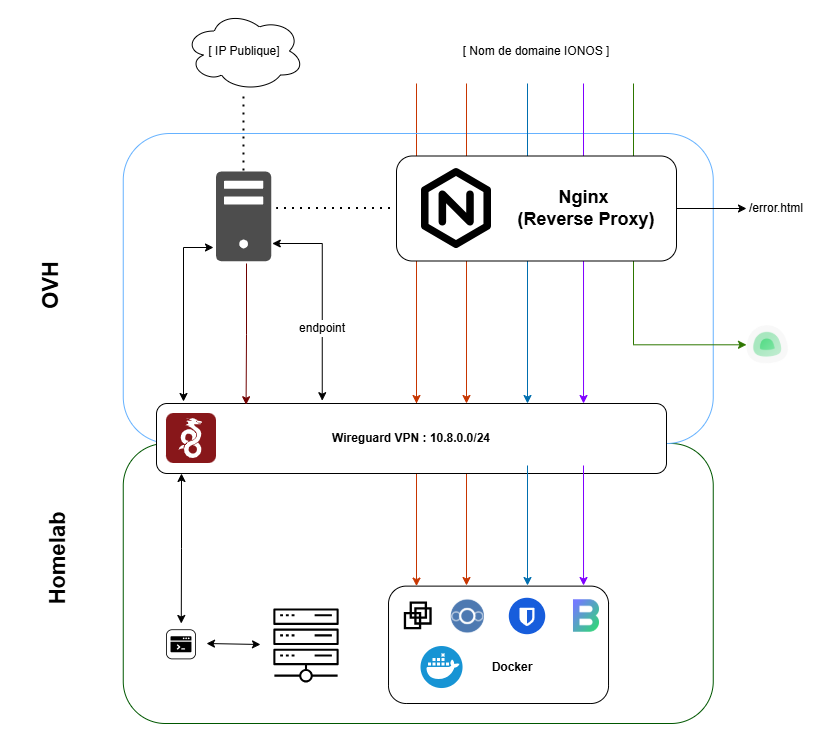
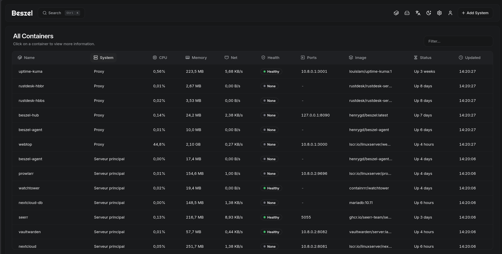

// homelab
Auto hebergement de services / cloud hybride
Conception d'une infrastructure hybride sécurisée reliant un VPS public (OVH) à un environnement local. L'architecture repose sur un tunnel Wireguard chiffré, permettant d'exposer des services critiques sans compromettre la sécurité du réseau domestique ni révéler l'adresse IP source.
Contexte & Problématique
Dans un contexte de montée des cybermenaces et de centralisation des données, j'ai souhaité reprendre le contrôle de mes outils numériques. La problématique était double :
1. Souveraineté : Héberger mes propres services pour ne plus dépendre de tiers. Cela permet de limiter la collecte de donnée et de limiter les couts
2. Sécurité : Rendre ces services accessibles via un nom de domaine sans ouvrir aucun port sur ma box internet résidentielle, évitant ainsi les scans de ports malveillants sur mon IP privée.
Objectifs
- Établir un pont réseau permanent et chiffré entre le Cloud (OVH) et le domicile.
- Centraliser la gestion des flux entrants via un Reverse Proxy unique (Nginx).
- Isoler les services dans des conteneurs Docker pour faciliter la maintenance.
- Garantir la confidentialité des données via le chiffrement TLS/SSL et un tunnel VPN.
- Assurer un monitoring des services.
Démarche & Déploiement
L'architecture se divise en deux segments interconnectés par un lien point-à-point :
- Étape 1 - Front-end (OVH) : Configuration d'un Reverse Proxy sur une instance Debian. Ce serveur reçoit le trafic public et le redirige de manière sélective dans le tunnel VPN vers le Homelab.
- Étape 2 - Tunnel Wireguard : Mise en place du tunnel chiffré entre le VPS et le serveur local. Le VPS fait office d'endpoint fixe, masquant totalement l'infrastructure domestique.
- Étape 3 - Routage Interne : Configuration du routage IP pour que les requêtes atteignent les services locaux sur la plage d'IP privée dédiée (
10.8.0.0/24). - Étape 4 - Écosystème de Services : Déploiement d'une stack Docker incluant Nextcloud (Cloud collaboratif), Vaultwarden (gestionnaire de mots de passe), et Webtop (VM Linux XFCE déportée) pour l'administration distante.

Résultats & Difficultés
Le projet est aujourd'hui mon environnement de travail quotidien. L'intégration de Beszel permet une surveillance des ressources matérielles, tandis qu'Uptime Kuma m'alerte instantanément en cas d'interruption d'un service.
Le principal défi a été la gestion de la persistance du tunnel et la résolution DNS interne. J'ai dû optimiser les paramètres PersistentKeepalive de Wireguard pour prévenir les déconnexions dues aux changements d'IP dynamique de ma connexion résidentielle. Ce projet m'a permis de consolider mes compétences en routage Linux, en gestion de certificats et en supervision réseau.
